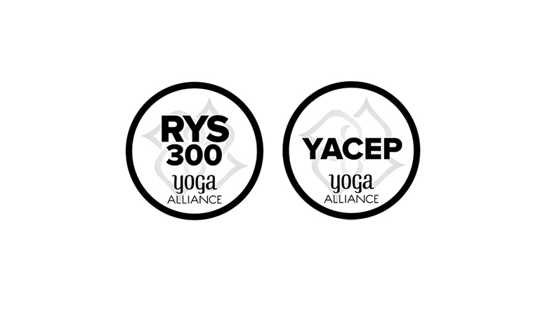

EXPRESSIONS OF YINTHE HOLISTIC APPROACHSEASON ONE • UNWINDING
50 Hour Yin Yoga Deepening Online ProgramJanuary 7 - February 4, 2021
During the course of this program we will be unfolding the different Expressions of Yin, across Yin Yoga, Fascia Universe, Functional Approach to the Practice, Somatic Embodiment, Sound Healing Meditation & Yoga Nidra to support the unwinding of mental habits, emotional fluctuations and physical tensions that rest within our bodily systems.
This Yin Deepening Program will be full of embodied practices in relation to Fascia, the Soma and ways to drop our nervous system to the minimum as a doorway for healing.
